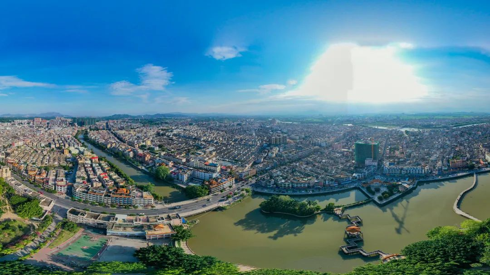
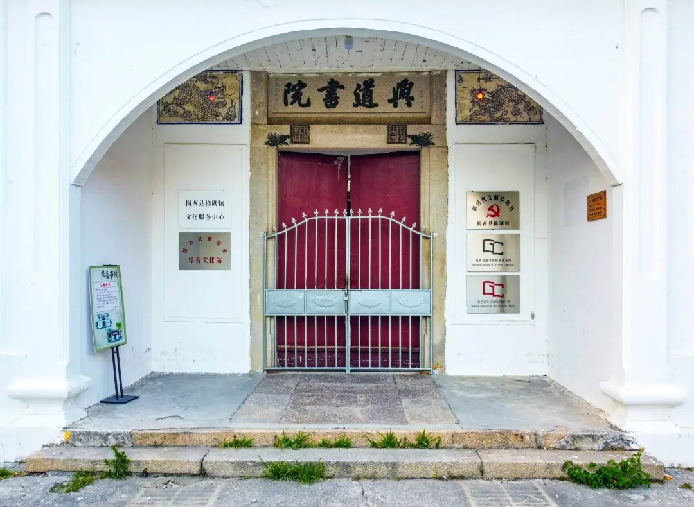
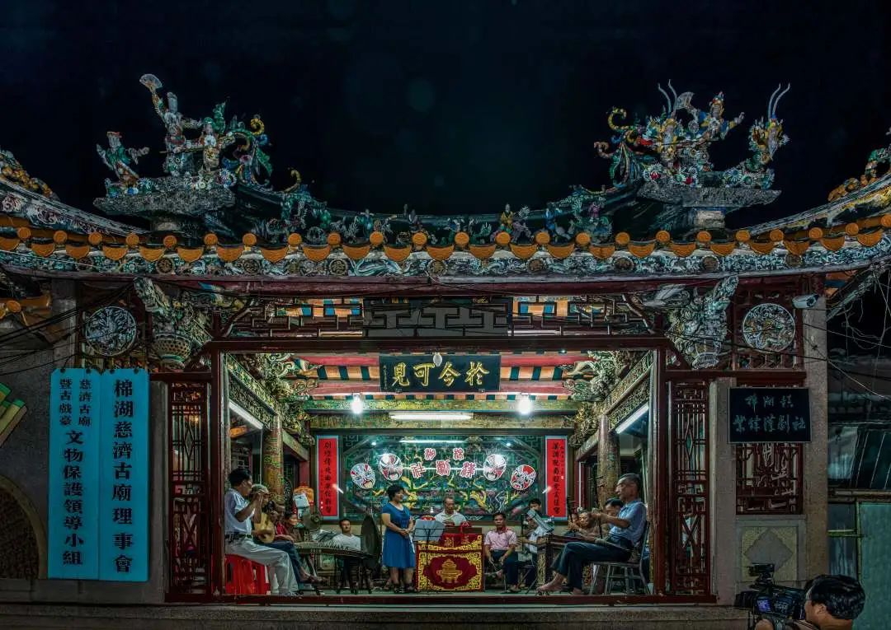
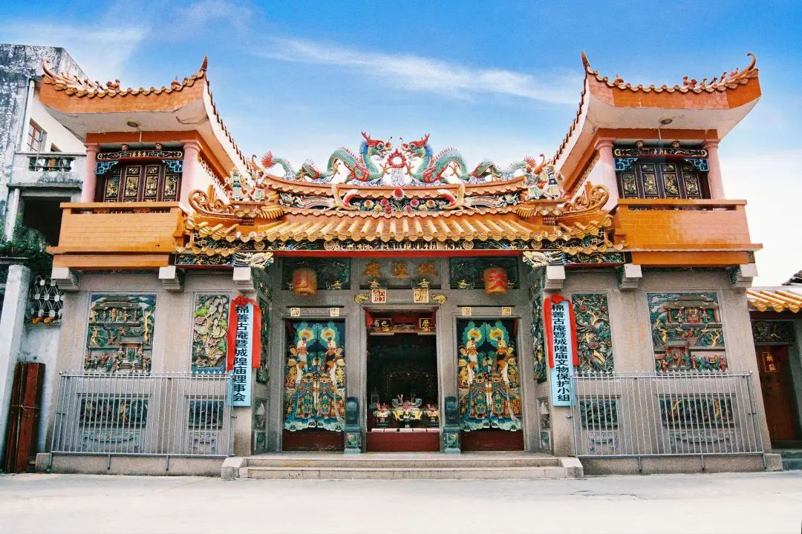

棉湖镇
棉湖镇作为揭西县潮汕镇的代表城市，其政治和积极地位不亚于河婆镇，不同与“山城”河婆，棉湖及其它的潮汕镇处于地势平坦的榕江平原。是潮汕文化的发源地之一。
棉湖镇位于揭西县东部、榕江南河中游东岸，东面、南面与普宁市赤岗镇、大坝镇毗邻，西面、北面与凤江镇、东园镇隔榕江南河相望。其中，棉湖古寨中保存有省级文物保护单位“潮汕乔家大院”——郭氏大夫第，棉湖战役东征军指挥部旧址——兴道书院，省级文物保护单位洪氏爱祖祠，金漆木雕等高超的建筑装饰工艺保留完好，精美绝伦。棉湖的城隍庙、拜神文化、英歌舞文化在潮汕地区也是不小名气的。
|  | 棉湖县城 |
棉湖战役东征军指挥部旧址 ——兴道书院 |
 |
|  | 湖西祠堂 |
城隍庙古寺庙 |
 |